Wallcoverings, woodgrain architectural film and window films supplied and installed — decorative and frosted glass film, PDLC smart film that switches from clear to opaque, and solar film for heat and glare.
Walls and glass are surfaces most businesses leave plain. A printed wallcovering turns a blank office wall into brand space; frosted film turns a glass partition into a private room; smart film does the same at the flick of a switch; solar film keeps the heat out of a west-facing shopfront. We supply and install all four.
01
Wallpaper & wallcovering
Supply and installation of wallcoverings for offices, retail, showrooms and F&B interiors — including custom-printed wallpaper produced from your own artwork, photography or brand pattern.
Custom-printed wallcovering
Commercial vinyl wallpaper
Feature and accent walls
Surface preparation and fitting
02
Interior woodgrain film
Architectural wrapping film in woodgrain and stone finishes, applied over existing walls, columns, ceilings, arches and joinery — a new finish without stripping out the substrate.
Walls, columns & ceilings
Curves, arches & reveals
Doors, joinery & counters
Woodgrain, stone & solid finishes
03
Decorative & frosted glass film
Film applied to glass for privacy, decoration or branding. Frosted and sandblast-effect finishes, cut patterns, one-way vision for shopfronts, and printed film carrying your own graphics.
Frosted & sandblast-effect film
Cut vinyl patterns & branding
One-way vision film
Printed decorative film
04
Smart film (PDLC)
Switchable privacy film laminated to glass. Powered on it is clear; powered off it turns opaque — privacy on demand without blinds or curtains. Used in meeting rooms, clinics, showrooms and bathrooms.
Switchable clear-to-opaque glass
Meeting rooms & consultation rooms
Showroom & retail display glass
Wiring, switching & commissioning
05
Solar film
Window film that rejects solar heat, glare and UV — cooler interiors, lower cooling load, and protection for furnishings and stock from fading. Available from near-clear to darker tints.
Heat & glare reduction
UV protection for interiors
Near-clear to tinted options
Building & shopfront glazing
Wallpaper & wallcovering
Feature walls and full-room wallcoverings — printed to the brand’s own artwork and fitted around fixtures, doors and lighting.
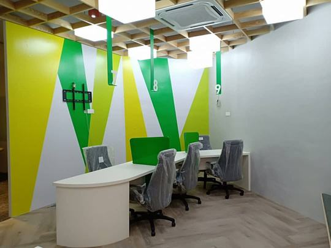
Grab office feature wallAngular graphic wallcovering behind the service desks
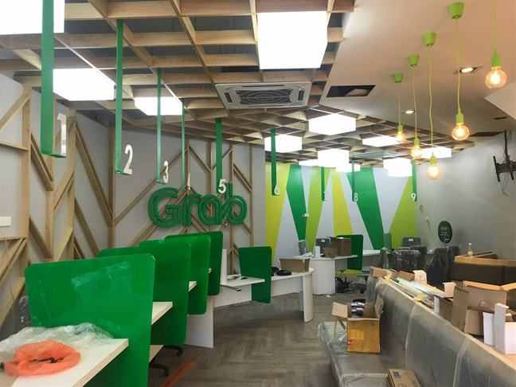
Grab service hallWall graphics carried across the full interior
Interior woodgrain film
Architectural wrapping film in woodgrain and stone finishes — applied over walls, columns, ceilings, arches and joinery to change the look without replacing the surface.
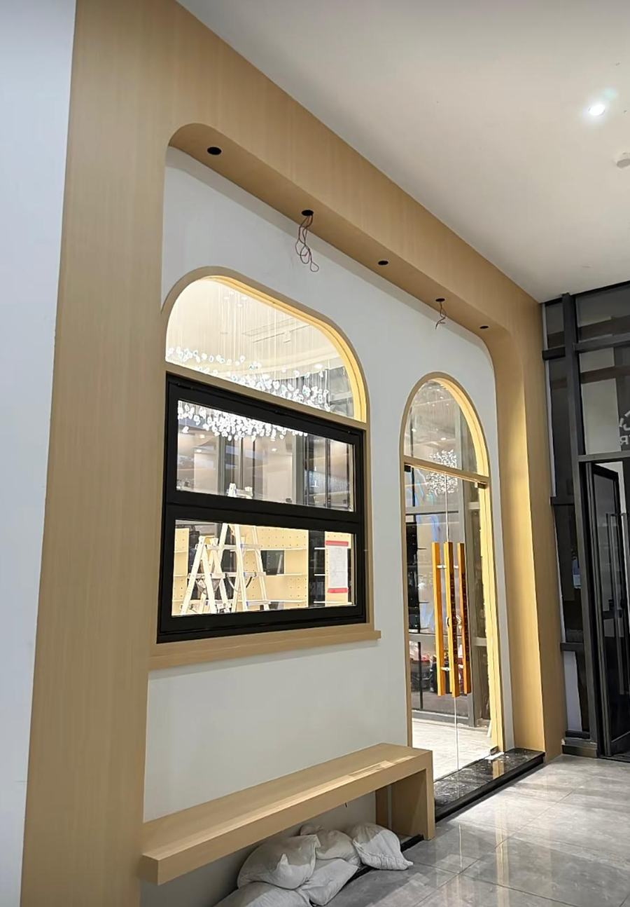
Arched feature wallWoodgrain film wrapped over arches, reveals and bench
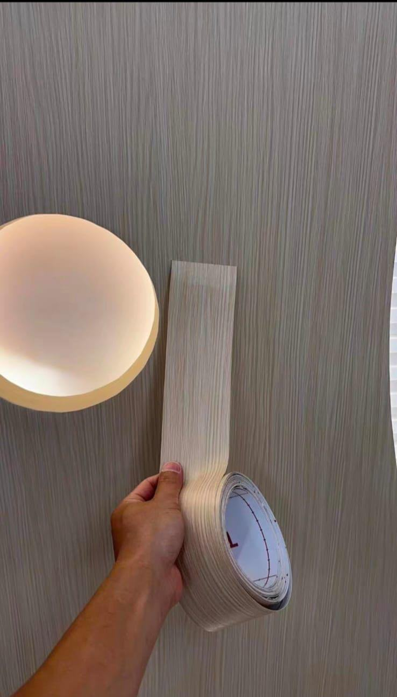
On-site applicationFilm applied directly over the existing wall finish
Woodgrain film goes on over the existing substrate, so a wall, column or ceiling can be re-finished without stripping it out. It bends around curves and arches that real timber will not follow, and it is far lighter and quicker to install than veneer or panelling — useful when a unit has to reopen on a fixed date.
Smart film (PDLC) — on / off
The same glass partition, switched. Powered on it is clear; powered off it turns opaque — privacy on demand, no blinds needed.
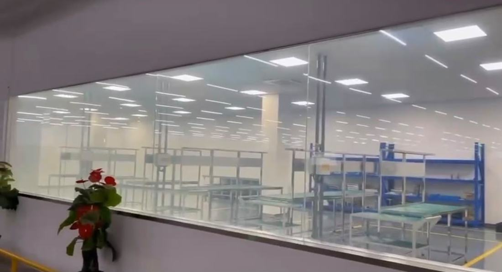
Powered ON — clearGlass turns transparent, production floor fully visible
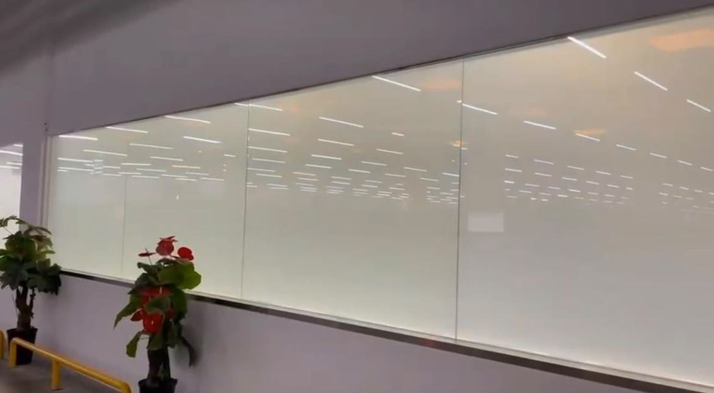
Powered OFF — opaqueSame glass switched to private in an instant
Printed window graphics
Printed and cut film applied to shopfront glazing — characters, wordmarks and full-height artwork that turns a plain window into brand space.
Made For Everyday JoyWordmark and character decals across the frontage
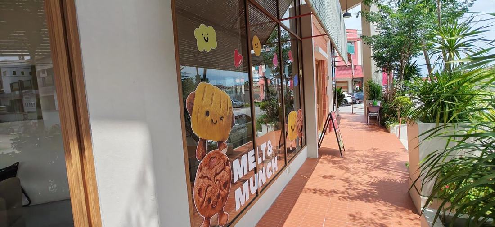
Shopfront glazingFull-height printed window film, street view
Solar film
Heat, glare and UV rejection on residential and commercial glazing — from near-clear to tinted.
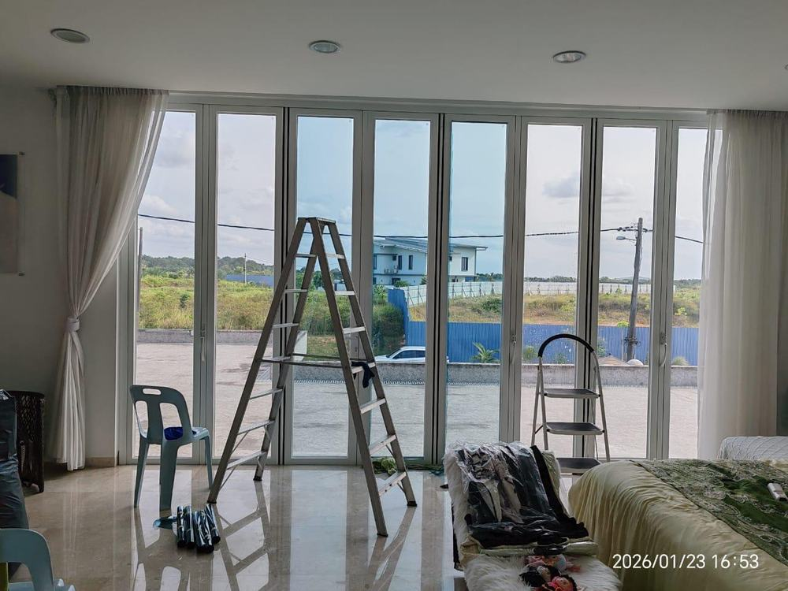
Residential folding doorsSolar film on full-height glazing — heat & glare reduction
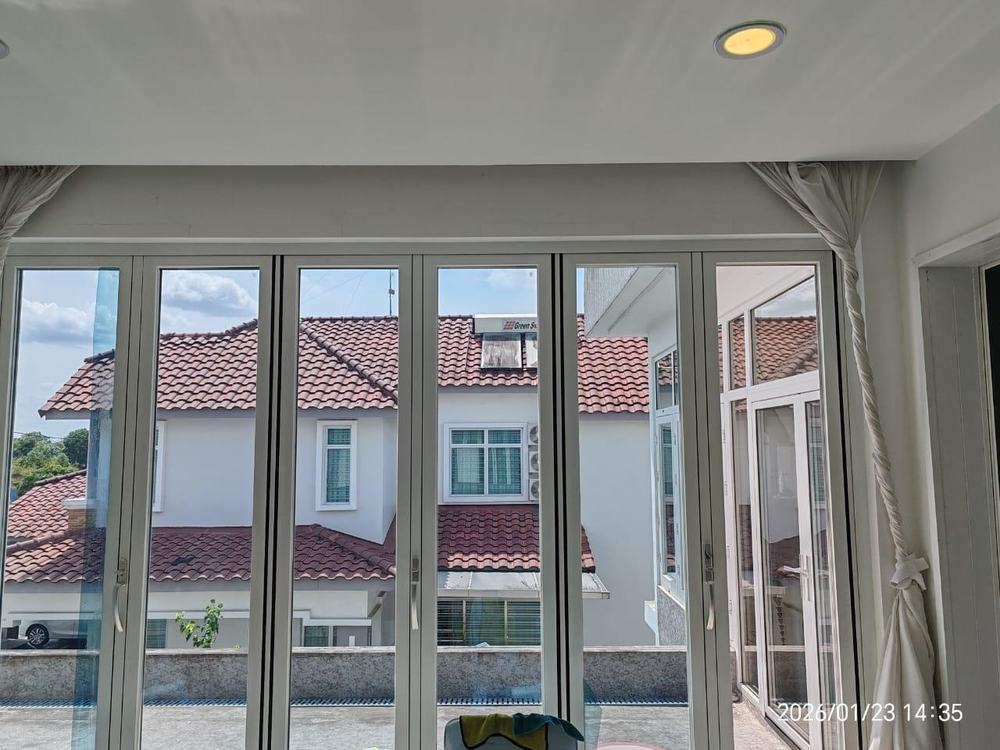
Patio bi-fold glazingSolar film retaining daylight and the view
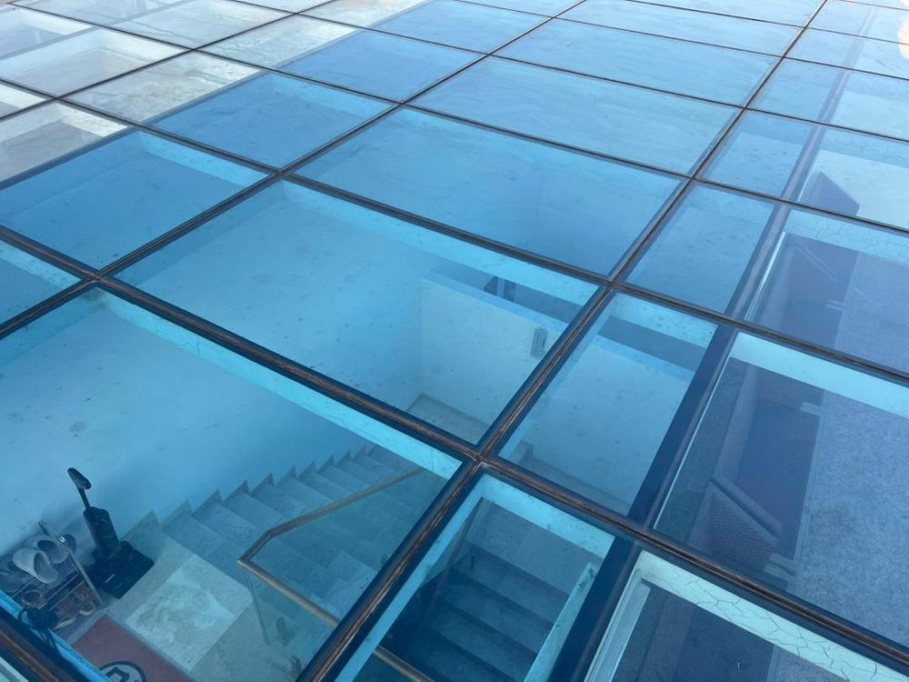
Glass floor & skylightSolar film on overhead structural glazing
Decorative & branded glass film
Frosted and gradient film carrying cut logos, wordmarks and printed graphics — privacy plus brand identity on the same glass.
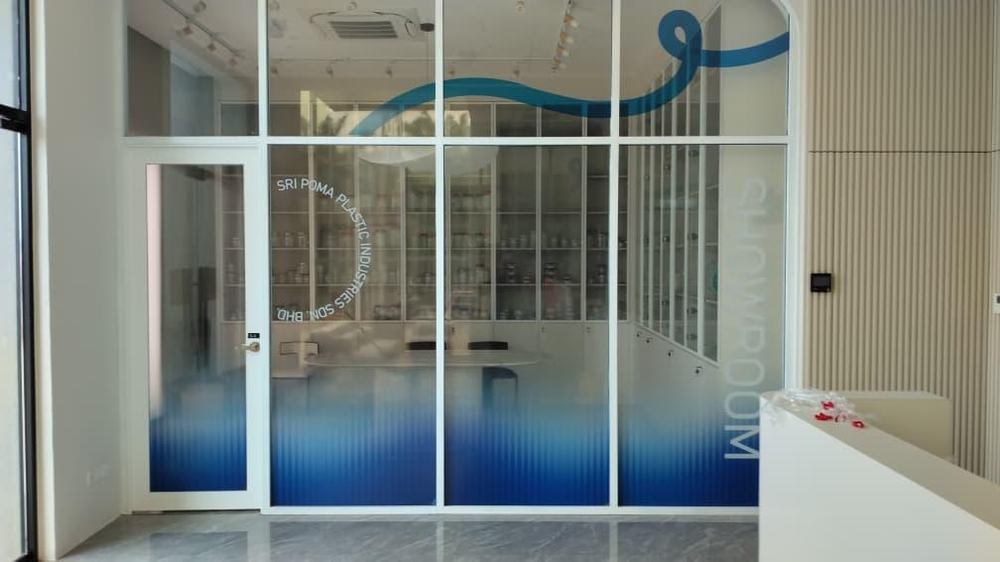
Sri Poma Plastic showroomGradient frosted film with cut branding
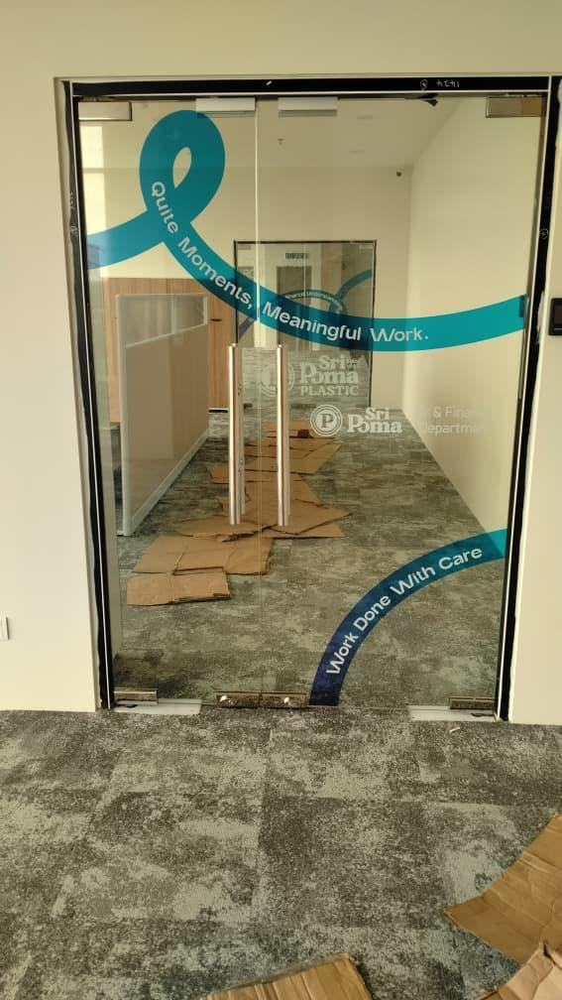
Office entrance doorPrinted ribbon graphic on glass door
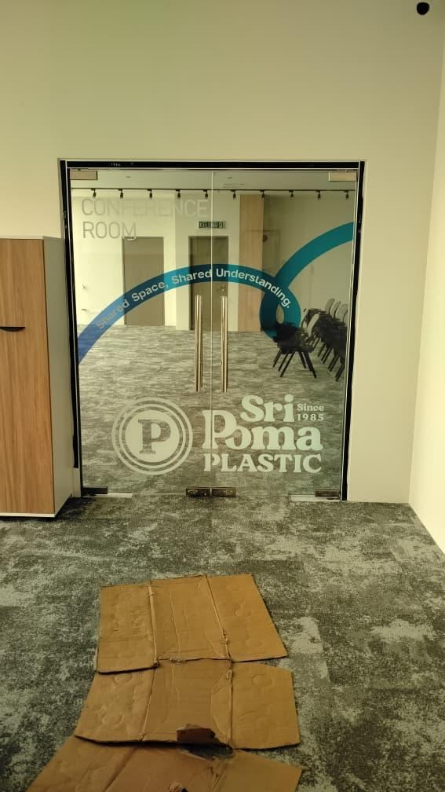
Conference room doorBranded film with room identification
Colours & finishes
Ask for the colour chart
Woodgrain, stone and solid finishes, frosted patterns, and solar film tints all come in ranges — far more than we can show here. Tell us which product you’re looking at and we’ll send the chart, or bring physical samples to your site.
Every film job starts with a site survey — glass type, orientation, and how much light or privacy you want decide which product is right. Smart film also needs a power supply, so we confirm switching and wiring before quoting.
Questions
Wallpaper & film questions
What is smart film?
Smart film, also called PDLC or switchable privacy film, is a laminated film applied to glass that turns from clear to opaque at the flick of a switch. It is used for meeting rooms, clinics, showrooms and bathrooms where you want privacy on demand without blinds.
What is the difference between solar film and glass film?
Solar film is about heat and glare — it rejects solar heat and UV to keep an interior cooler and protect furnishings. Decorative or frosted glass film is about appearance and privacy — it obscures the view, carries a pattern, or holds cut branding and signage graphics.
Do you supply and install wallpaper?
Yes. We supply and install wallcoverings for offices, retail units, showrooms and F&B interiors, including custom-printed wallpaper using your own artwork or photography.
Can you print custom artwork onto wallpaper or film?
Yes. Large-format printing lets us produce bespoke wallcoverings and printed window film from your artwork, so a wall or shopfront glass can carry your own brand imagery.
Does solar film make a room dark?
Not necessarily. Solar films come in a range of tints and reflectivity levels, including near-clear films that reject heat while keeping the glass looking largely untinted. The right choice depends on the orientation of the glass and how much natural light you want to keep.
How long does film installation take?
Most single rooms or shopfronts are done within a day. Larger jobs and smart film, which needs a power supply and switching, are scheduled after a site survey.